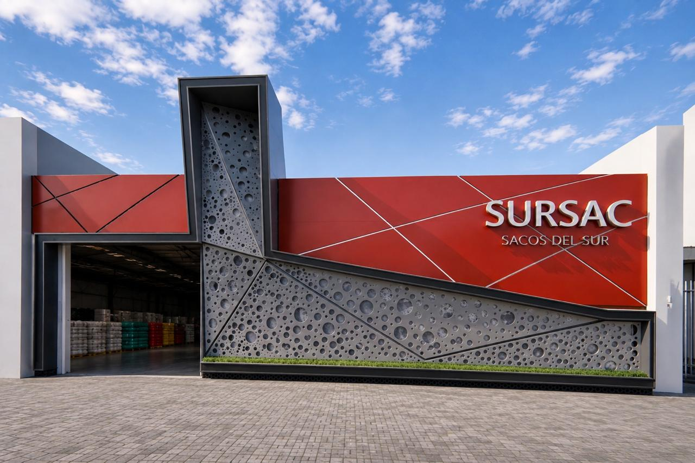

Misión
Mantener nuestro liderazgo como referentes en calidad, servicio y compromiso con el sector agroindustrial, con soluciones de empaque confiables que impulsan el desarrollo productivo del país.

En SURSAC fabricamos y distribuimos sacos plásticos. Producimos localmente y, con fábricas colaboradoras en Perú, abastecemos con volumen y variedad a exportadores y agroindustria en Ecuador, Perú y Colombia.
Nuestra especialidad es el saco malla o saco de leno, donde somos referente en la costa ecuatoriana con cerca del 70% del mercado en la zona, produciendo en cantidades industriales. Y más allá del saco malla, manejamos toda la gama de sacos y telas, con personalización en medida, color, gramaje e impresión. Lo que nos distingue es la calidad: fabricamos sacos resistentes, pensados para reutilizarse muchas veces y proteger el producto de forma confiable desde el campo hasta su destino final.

Mantener nuestro liderazgo como referentes en calidad, servicio y compromiso con el sector agroindustrial, con soluciones de empaque confiables que impulsan el desarrollo productivo del país.
Expandir nuestra presencia en Ecuador y la región andina, reconocidos por la innovación y la calidad en soluciones de empaque sostenible para el agro.
Integridad, excelencia y compromiso con nuestros clientes y la comunidad agrícola.
Sacos y soluciones de empaque resistentes, personalizados para las exigencias de tu sector.